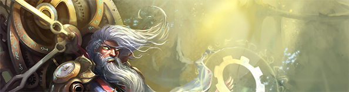
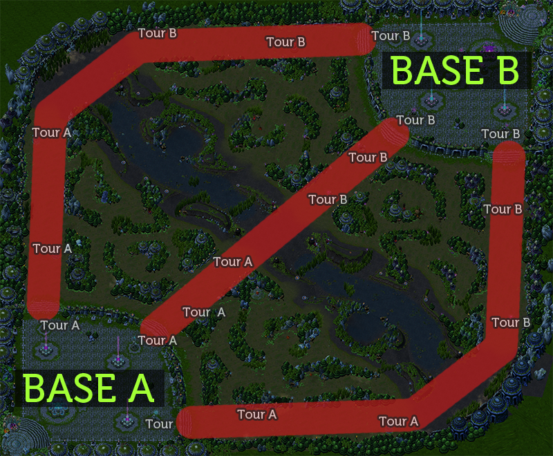
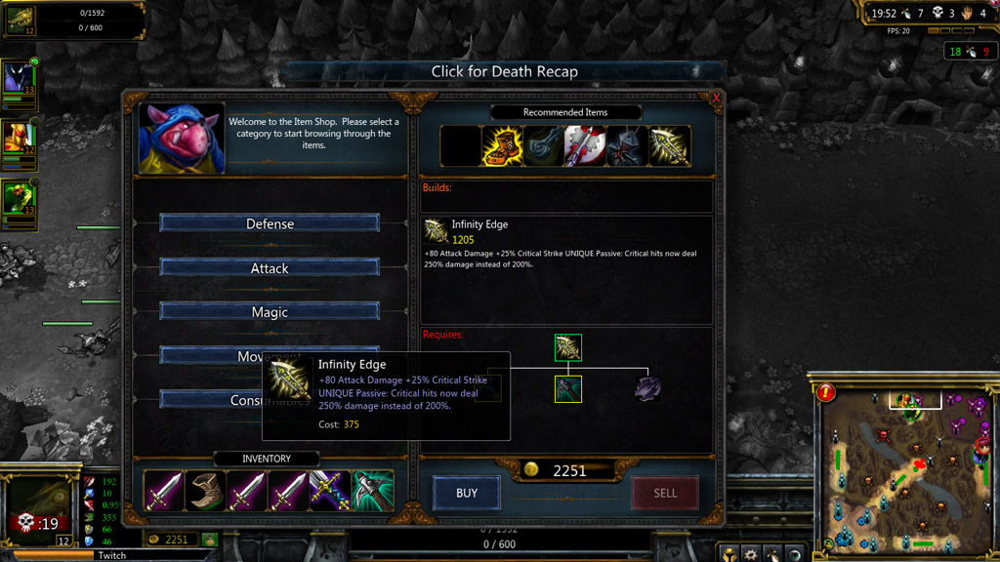
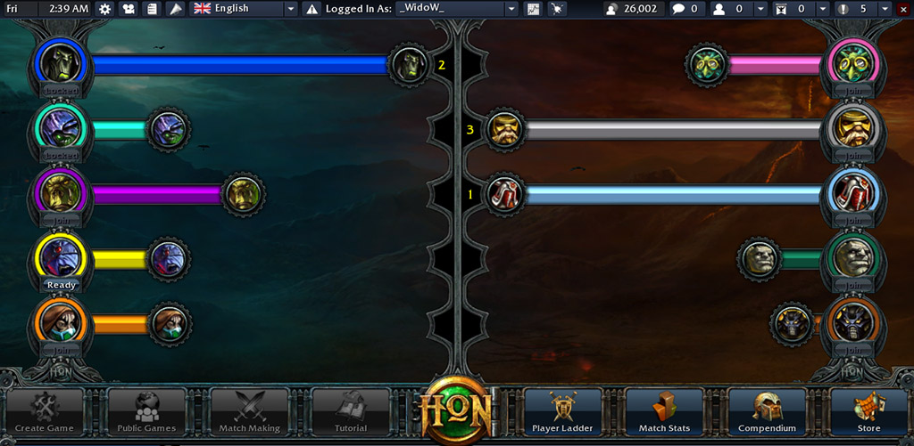
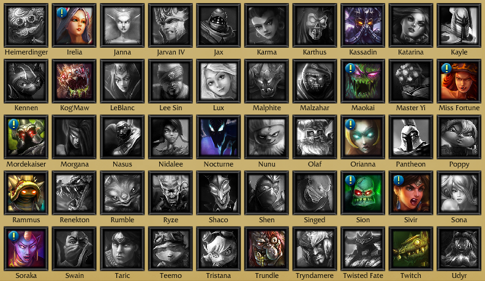

Game Design & MOBA
Je ne sais pas pour vous mais depuis que je fais des jeux (et depuis que je ne suis plus au lycée, ce qui commence à dater un peu), j'ai l'impression que je passe de moins en moins de temps à jouer. En tant que passionné, je suis au courant de l'actualité, des annonces et des jeux qui sortent ; je lis la presse, je regarde des screenshots, je m'arrête dans le salon regarder à quoi jouent mes chers colocataires, mais je ne joue pas très souvent moi-même.

Un peu largué dans les conversations de gamers, je me demande bien où réside l'attrait de bon nombre de succès récents. Par exemple la série des Halo. Je suis sûr qu'il doit y avoir quelque chose à sauver et qu'autant de gamers ne peuvent pas s'être tous trompés, mais vu de loin il s'en dégage pour moi l'image d'un FPS qui tourne au ralenti où les personnages sont des cosmonautes neurasthéniques dans une série B avec des aliens (et des épées lasers).
Heureusement, mon instinct de joueur n'a pas disparu et il m'arrive de redevenir un hardcore gamer pour quelques semaines ou quelques mois. C'est ce qui s'est produit l'an dernier quand j'ai eu le plaisir (ou le malheur ? à vous de trancher) de découvrir League of Legends, l'un des MOBA à la mode ces derniers temps.
Qu'est ce qu'un MOBA ?
Historique rapide
Si vous êtes déjà familier du genre, vous pouvez vous épargner la lecture de quelques paragraphes et passer directement au coeur de l'article (Pourquoi ça marche ?). Pour les autres, le MOBA (pour Multiplayer Online Battle Arena) est un genre récent à la croisée du RPG et du RTS. Le jeu à l'origine du genre est le célèbre mod de Warcraft III baptisé DOTA (pour Defense of the Ancients) qui sert de modèles à tous les autres — c'est à dire League of Legends, Demigod, Heroes of Newerth, le futur Dota 2 développé par Valve et quelques autres jeux plus obscurs.
Mon expérience se limite à DOTA auquel j'ai peu joué, et à League of Legends qui a englouti plusieurs mois de ma vie. Mes explications et mes exemples reposeront donc sur ce dernier mais je vais faire de mon mieux pour faire abstraction des spécificités du jeu et ne m'intéresser qu'au genre. Les puristes me pardonneront de ne pas rentrer dans les détails, de ne pas mentionner des variantes de règles, ou d'oblitérer des subtilités qui ne font pas avancer mon propos.
Mode d'emploi d'un genre à part
La première chose à vous mettre dans la tête est que les MOBA sont un genre à part entière. Ce ne sont pas des RTS ni des RPG mais bien un enfant bâtard qu'aucun des deux genres ne pourrait jamais reconnaitre comme le sien. C'est ce fragile équilibre qui rend le genre si pointu. Vous allez le voir par vous même, à entendre le concept d'un MOBA on se demande comment on peut tirer plusieurs jeux différents d'un genre aux caractéristiques si précises.

Une partie dure entre vingt minutes et une heure et met face à face deux équipes de 5 joueurs humains. La caméra a un point de vue semblable à celui d'un RTS, mais chaque joueur ne contrôle qu'un seul personnage, avec sa souris (comme dans un RTS ou un Hack'N Slash). Il n'y a pas de bâtiments à construire ni d'unités auxquelles donner des ordres. Ce qui semble très étrange au premier abord, c'est que l'on joue toujours sur la même carte. Voici une version schématique de la carte en question (commune au moins à DOTA, LoL et HoN).

Les équipes ont chacune une base (coins haut-gauche et bas-droit de la carte) où les joueurs respawnent quand ils meurent. L'objectif de la partie est de détruire le cœur de la base ennemie, qui est défendu non seulement par les joueurs mais aussi par de puissantes tours de défense automatiques. Il y a 3 chemins (appelés lanes, en rouge sur ma carte) qui relient les deux bases et qui sont tous pourvus de tours de défenses (indiquées sur la carte). La dynamique du jeu repose sur le combat à 5v5 sur ces 3 champs de batailles différents entre lesquels il faut sans cesse alterner, car une tour sans joueur(s) pour la défendre peut être rapidement abattue (et une tour en moins, c'est un pas en plus vers la base).
Les 10 joueurs ne sont pas seuls sur la carte pour autant. Chaque base génère en continue des unités très faibles (les creeps) qui avancent de manière robotique le long des 3 lanes pour aller combattre les creeps de l'équipe adverse. Ces creeps ont plusieurs intérêt pour le Game Design du jeu :
- Ils ont un champ de vision dont le joueur profite car toutes les informations accessibles à son équipe sont représentées sur sa minimap.
- Ils permettent de savoir grosso modo jusqu'où une équipe a le contrôle stratégique de la carte (les creeps se font arrêter par les tours et les creeps adverses, ou par des joueurs ennemis qui les massacrent).
- Ils servent de chair à canon pendant que les joueurs abattent une tour (la tour tue les creeps — et non les joueurs — pendant que les joueurs sapent la tour. En l'absence de creeps, la tour s'attaquerait aux joueurs).
- Ils rapportent de l'or et de l'expérience (voir ci-dessous)
De l'expérience et de l'or, c'est là que l'aspect RPG entre en jeu. A mesure qu'ils tuent des creeps, des joueurs ennemis et des tours, les joueurs sont récompensés par de l'or et de l'expérience. L'or sert à acheter des objets au magasin (dans la base de l'équipe) pour rendre son personnage plus puissant (un peu comme le magasin dans Counter Strike), et l'expérience permet d'améliorer ses caractéristiques (force, défense etc.) et ses compétences (les skills) comme dans un RPG traditionnel.
Là où le système s'éloigne d'un RPG traditionnel, c'est que les caractéristiques de base et les compétences d'un joueur sont essentiellement déterminées avant le début de la partie par le choix d'un personnage. Chaque MOBA propose plusieurs dizaines de personnages (104 dans DOTA) qui ont chacun un design propre, des caractéristiques de base et surtout 4 skills qui seront leurs seules actions possibles pendant la partie (en plus d'une attaque standard commune à tous les personnages).
On retrouve comme personnages les archétypes développés dans les RPG et MMORPG ces dernières années : healers (personnages avec des sorts de soin), tanks (personnage capable d'encaisser beaucoup de dégâts pour son équipe), DPS (personnage capable d'infliger des dégâts conséquents sur la durée), nuker (personnage capable de faire beaucoup de dégâts en peu de temps) etc., avec toutes les variantes possibles et imaginables (personnage corps à corps ou à distance, dégâts physiques ou magiques…).
La gestion des objets (achetés pendant la partie avec de l'or, si vous avez tout suivi) est elle aussi différente d'un inventaire traditionnel de RPG. Chaque joueur a 6 slots d'inventaire pour son personnage qu'il peut remplir comme il le souhaite. Je veux dire par là que vous pouvez équiper votre personnage avec 6 épées différentes, c'est tout à fait l'état d'esprit. La subtilité du système réside dans le fait que :
- Les objets du magasin sont très nombreux (mais les joueurs un peu entraînés les connaissent sur le bout des doigts).
- La plupart des objets s'obtiennent en combinant entre eux des objets de coût inférieur.
- Les objets ont des effets souvent complexes qui agissent sur plusieurs caractéristiques, et qui peuvent (ou non) se cumuler entre eux.

Il en résulte des wikis, des guides, et des débats de theory crafting (sur les forums ou avec vos colocataires) pour tenter d'établir quels sont pour chaque personnage les objets les plus adaptés. Il n'y en général pas de solution exacte mathématique au problème, et tout dépend de la composition de l'équipe adverse, du déroulement de la partie et des changements d'équilibrage des derniers patchs. Équilibrer un tel jeu est en effet un exercice périlleux en raison du nombre colossal de personnages, d'objets et de skills mis en jeux (et c'est sans doute l'une des raisons pour lesquelles les MOBA ne se jouent que sur une seule carte).
Enfin, dernier élément de briefing avant que l'on ne s'intéresse aux astuces de Game Design qui rendent les MOBA si addictifs (et si bien conçus) : la carte ne se limite pas aux trois lanes où sont plantées les tours. Il est possible de circuler entre les lanes en passant par la « jungle » qui est faite de petits chemins tortueux (parfaits pour tendre des embuscades) et où l'on trouve à emplacement fixe des monstres neutres (les neutral creeps) qui ne s'en prennent aux joueurs que si on les attaque et qui pour certains donnent des récompenses considérables — ce qui fait d'eux des endroits stratégiques de la carte à contrôler.
Pourquoi ça marche
Bon, c'est bien gentil tout ça mais mon intention n'est pas de faire un guide d'initiation aux MOBA. Passons donc aux choses sérieuses si vous le voulez bien, tentons d'isoler quelques-unes des spécificités du genre qui le rendent si prenants, et qui ont poussé plus d'un joueur raisonnable à veiller jusqu'à l'aube.
Avatars et héros
Comme je vous l'ai expliqué, chaque partie commence par un écran de sélection de personnage où chaque joueur choisit le héros qu'il incarnera pendant la partie. Là où les choses deviennent intéressantes, c'est que le choix du héros donne l'impression au joueur non pas qu'il incarne le héros mais que le héros le représente. La nuance est très importante ; considérez la différence d'affection et d'attachement éprouvés envers Lara Croft (quand vous jouez à Tomb Raider) et votre personnage dans Guild Wars ou World of Warcraft.
Ce qui différencie fondamentalement Lara Croft et Belin le nain forgeron (votre personnage de World of Warcraft), c'est que Belin est un personnage qui a une apparence physique et des caractéristiques (en terme de règles du jeu) qui sont uniques et le fruit de vos décisions. Lara Croft a le même physique pour tous les joueurs de Tomb Raider et toujours le même fusil à pompe. Vous l'avez compris, c'est la customisation qui fait la différence : en étant amené à prendre des décisions le concernant, le joueur se sent plus responsable et proche de son personnage.
Dans un MOBA, on ne personnalise pas son héros. L'identification est pourtant possible grâce à plusieurs astuces :
- Le nom du joueur est toujours associé au héros qui le représente dans la partie en cours. Dans League of Legends, le nom du joueur est affiché sur le portrait du héros dès l'écran de chargement (en dessous du nom du héros). Pendant la partie, ce sont les noms des joueurs qui sont affichés au dessus des personnages. Dans HoN, les noms des joueurs ne sont même pas affichés à l'écran de chargement et seul un portrait de leur héros apparait.

- Le très grand nombre de héros disponibles rend le choix d'un héros finalement peu différent d'un procédé de customisation. Avoir une centaine de personnages procure autant de diversité (voire plus puisqu'ils sont crées à la main) qu'une customisation où l'on aurait 20 options à choisir avec 5 valeurs possibles pour chacune. C'est de l'ordre de ce que proposent certains MMORPG. La recherche d'un héros qui corresponde au joueur est facilitée (et encouragée) par la présence d'informations détaillées (artwork, background, skills, style de jeu, etc.) sur chaque personnage accessibles depuis le jeu et de manière très ordonnée. Ci-dessous, l'écran d'information sur les personnages dans League of Legends. C'est cet écran aperçu sur le PC d'un colocataire qui a attisé ma curiosité envers le jeu, comment résister à l'envie de cliquer sur ces petits tiles carrés bien agencés ?

- Le caractère très compétitif et technique du jeu fait que la plupart des joueurs passent un très grand nombre d'heures à jouer avec une petite poignée de héros qu'ils veulent bien maîtriser. En ce qui me concerne, j'ai joué mes 200 premières parties de League of Legends — une centaine d'heures — avec un seul et unique héros. Le même phénomène a lieu avec les jeux de combats un peu techniques (Guilty Gear, Street Fighter, etc.) où les bons joueurs sont connus en tant que spécialistes de tel ou tel personnage, auquel on les associe ensuite naturellement. A force de jouer toujours les mêmes héros, on a l'impression d'établir un lien avec eux qui perdure entre les parties (qui sont pourtant indépendantes).
Ce sont là les techniques que j'ai pu identifier pour permettre aux joueurs de considérer les personnages qu'ils incarnent comme leurs avatars, ce qui renforce leur lien avec le jeu.
Le feedback immédiat
Une fois la partie démarrée, les DOTA-like usent et abusent de feedback immédiat. Je sais que le nom est proche mais cela n'a rien à voir avec la rétroaction positive dont Ernest Adams parle si bien. Le feedback immédiat est une notion que j'aime beaucoup parce que je trouve qu'elle renvoie très fortement au concept de jeu vidéo dans sa forme la plus simple, à savoir :
- Je regarde l'écran
- J'appuie sur un bouton
- Il se passe un truc à l'écran
Ce qui rend en grande partie les jeux vidéos si addictifs, c'est le savant dosage de ces mécaniques d'action/réaction qui donnent l'impression au joueur qu'il fait quelque chose de plus qu'appuyer sur des boutons. Quelques exemples de feedback immédiats particulièrement mémorables sont le gling gling rythmé des pièces que l'on accumule dans Super Mario Bros. (ou le dôôi dôôi de la caisse de pommes que l'on vide avec un rythme de métronome dans Crash Bandicoot), la ligne complétée qui clignote frénétiquement avant de disparaitre dans Tetris, le barrel roll d'un Starwing ou d'un Wipeout HD, ou encore le stealth kill millimétré de Tenchu. La liste pourrait être beaucoup beaucoup plus longue car il s'agit d'une notion assez simple à appréhender et que beaucoup de Game Designers semblent maîtriser (parfois inconsciemment).
L'absence totale de feedback immédiat associé à une action produit un effet très désagréable, qui donne au joueur l'impression que le jeu n'est pas réactif voire carrément mal programmé. Essayez d'imaginer comment ce serait de jouer à Zelda si les rubis ne faisaient pas de bruit quand on les ramasse ; on aurait l'impression qu'ils disparaissent quand on passe à proximité (alors qu'avec le son on a l'impression de les ramasser).
Vous aurez remarqué que beaucoup de mes exemples de feedback immédiat sont associés à un son caractéristique et pas juste à un effet visuel à l'écran, c'est dû au fait que plus le feedback est important, plus le joueur ressent de plaisir immédiat. Chez Blizzard North, c'est une chose que l'on a compris depuis bien longtemps, et c'est pour cela que des générations de joueurs ont tremblé au son cristallin (ding) des anneaux magiques qui tombent au sol dans Diablo, ou au comparable ding de Level-up de World of Warcraft. D'ailleurs les Game Designers de chez Blizzard ont décidé d'aller encore plus loin. Voici ce qu'on pouvait lire en 2008 dans une preview de Diablo 3 sur planetdiablo.com :
Leveling up is probably the greatest thing I have seen yet. Imagine yourself surrounded by a horde of zombies, you are clicking away, casting or swinging weapons, and all of a sudden you level up; Big deal right? Ok, let's take that one step further. When you level up in Diablo III , it does a massive damage area-of-effect skill. I was grinning from ear to ear.
Et là tout est dit. Vous vous battez normalement, vous cliquez sur un monstre et là CRAC c'est l'explosion de lumière, le déluge d'effets de particules lumineuses dans l'écran, et j'imagine qu'une montagne d'effets sonores (chœur angélique qui délivre un saint « Aaaaah », craquement gras de l'explosion, cris et bruits percussifs des monstres qui meurent) vient accompagner ce festival d'orgasmes de poche. Autant dire que vous n'êtes pas déçus d'avoir cliqué et que vous ne risquez pas de passer à côté d'un level up.
Pour en revenir aux MOBA, sachez que non seulement ils font un usage très bien dosé du feedback immédiat (il y en a même quand vous cliquez pour déplacer votre personnage) avec toutes les ficelles classiques dont on vient de parler, mais à cela s'ajoute un aspect important. Rappelez vous que nous sommes en multijoueur à 5 contre 5, et que tout le monde profite de vos feedbacks (pour peu que tout le monde ne soit pas à l'autre bout de la carte), et cela implique que le joueur les apprécie d'autant plus qu'il les impose à tout le monde. C'est un autre niveau par rapport au concept de base de feedback immédiat. Ici le schéma est le suivant :
- Je regarde l'écran
- J'appuie sur un bouton
- Il se passe un truc à l'écran
- Il se passe un truc sur les écrans de 9 autres personnes qui y prêtent attention
Je vous ai déjà fait remarquer que le fun ressenti était lié à l'intensité du feedback, il est intéressant de constater que dans le cadre d'un jeu multijoueur le feedback en question devient un pouvoir exercé sur les autres joueurs — autant dire quelque chose de bien plus intense qu'un effet sonore. Le travail du Game Designer est de doser ce pouvoir donné au joueur pour maximiser son plaisir individuel sans pour autant briser la cohérence du jeu ou créer de la frustration chez les autres joueurs.
Si vous avez déjà joué à Quake III en activant le mod qui fait que le Plasma Gun tire des grenades à fragmentation au lieu de boules d'énergies (avec une cadence de tire de mitrailleuse), vous aurez remarqué que le premier joueur à s'en saisir s'amuse comme un fou au milieu de morceaux de cadavres en charpie qui volent sur fond d'explosion, pendant que les autres joueurs se font tuer souvent moins d'une seconde après leur respawn. Voilà un exemple de feedback immédiat si important qu'il en dérègle le jeu. A l'inverse, un exemple particulièrement bien dosé dans League of Legends est le skill Paranoïa du personnage Nocturne ; entre autres effets, ce skill assombrit pendant quelques secondes l'écran de tous les joueurs, joue un effet sonore (une voix grave et fantomatique qui murmure darkness avec plaisir) et réduit le champ de vision des adversaires. Le jeu n'est pas déréglé, mais le joueur qui incarne Nocturne a eu son heure de gloire en déclenchant tout un petit festival de feebacks immédiats en appuyant sur une touche de son clavier.
La compression du RPG
Passons à un atout vraiment spécifique aux MOBA. Le choix du personnage et le feedback immédiat, c'est bien gentil tout ça, mais dans une certaine mesure on en trouve presque autant dans Street Figther II . Aussi excellent soit-il, il n'est pas aussi addictif qu'un MOBA.
Dans un RPG classique, et c'est surtout vrai pour les RPG dits à l'occidentale (pensez Wizardry, Baldur's Gate ou encore une fois Diablo), une grande partie de l'amusement du joueur repose sur la progression et la montée en puissance de son personnage. Au début du jeu, vous peinez pour éradiquer le grenier d'une horde de rats. Quatre-vingt dix heures plus tard, à la fin du jeu, vous êtes récompensés pour vos choix tactiques (équipements, compétences etc.) et vous êtes en mesure de sauver des royaumes et vaincre des dragons.
Maintenant imaginez exactement la même chose mais compressée en une demi-heure de temps. Vous voyez où je veux en venir ? Un MOBA propose le temps d'une partie la même structure ludique qu'un RPG entier, et je vous laisse deviner l'intensité du gameplay qui en résulte et le caractère crucial que prend chaque choix d'équipement (ce qui explique le phénomène du theory crafting dont je vous parlais plus tôt). C'est un tour de force de Game Design qui demande bien plus d'ajustements que diviser tous les chiffres d'un RPG classique par 100. Proposer au joueur un tel champ d'évolution en un laps de temps aussi court expose l'équilibrage des mécaniques de jeu puisqu'il devient très facile pour les joueurs de les tester en profondeur et de voir les effets à « long terme » (c'est à dire une heure tout au plus) de leurs décisions.
Le résultat est à la hauteur du concept. En début de partie les personnages sont de puissance comparable et peuvent se faire tuer d'un seul coup par certains monstres neutres de la carte. A la fin, un joueur qui a réussi sa partie peut sortir vainqueur d'une rencontre à 1 contre 2 (voire plus selon le jeu et le personnage dont on parle).
De la coopération à la dépendance
Dernière spécificité de Game Design des MOBA dont nous allons parler, la relation entre les joueurs d'une même équipe. Je suis très loin d'être un connaisseur en matière de jeux en lignes (rassurez vous, j'ai tout de même fait mon quota d'heures sur Unreal Tournament ou Neverwinter Nights), mais je pense que les MOBA apportent là aussi quelque chose d’intéressant.
La notion d'équipe dans un MOBA dépasse celle que l'on trouve dans un Team Deathmatch classique. Dans les FPS en ligne, les joueurs sont subordonnées à un objectif commun mais ils sont capables d'évaluer leurs propres performances (par exemple avec leur ratio ennemis tués/morts) indépendamment du reste de leur équipe et surtout de la tournure générale que prend l'affrontement. Dans un MOBA, chaque mort donne un avantage en or très considérable à l'équipe adverse et un court répit pour avancer vers les objectifs de la partie. En plus de cela, l'équilibrage de ces jeux est si fin qu'un seul joueur moins bon que les autres peut mener une équipe droit vers la défaite, et c'est d'ailleurs ce qui se passe dans la plupart des parties.
Un système de jeu qui intègre une telle dépendance entre les joueurs (un peu comme dans Left4Dead d'ailleurs) est une arme à double tranchant. C'est la porte ouverte à beaucoup de frustrations et à beaucoup de parties gâchées, mais c'est aussi une route toute tracée pour un jeu très stratégique et très compétitif à haut niveau — sans parler de toutes les émotions qui naissent du lien de confiance et de respect mutuel qui s'établit naturellement entre les joueurs d'une bonne partie. Voir votre personnage marcher au coude à coude avec un autre joueur de votre équipe, tout en sachant de manière tacite quelle stratégie complexe et coordonnée employer quand un ennemi apparaîtra à l'écran — c'est un instant d'une qualité rare que peu de jeux peuvent offrir.
Une ficelle de Game Design à utiliser avec précaution donc.
Je crois être arrivé au bout de ma réflexion, merci de l'avoir suivie jusqu'à son terme. J'espère qu'elle vous aura donné quelques perspectives de Game Design ou au moins la curiosité de jouer à un MOBA par vous-même pour vous rendre compte du travail d'orfèvre que représente leur conception (prévoyez beaucoup de temps libre ou une volonté de fer). Soyez bien conscient que cet article n'avait pas pour but de donner un avis objectif sur les MOBA mais bien d'analyser les points forts de leur Game Design, sans m'attarder trop sur leurs défauts (interdépendance excessive des joueurs, la courbe d'apprentissage trop raide, etc.). Comme toujours, vos remarques et commentaires sont les bienvenus, je suis convaincu que le genre a bien d'autres trouvailles de Game Design à considérer :).
Merci à Widowan pour ses screenshot de Heroes of Newerth et à Deodred pour ceux de League of Legends.
Ajouter un commentaire
Commentaires

Vu l''explication donnée à propos de ce type de jeux, cela est tout a fait ce que faisait un mod de starcraft (Broodward) dans les années 90 et quelques. Une base pour chacun des deux camps, défendues par des tours, et où les joueurs morts respawnent, ainsi que les trois chemins qui mènent d'un camp à l'autre. A l'époque on appellait ça des towers defense, mais ensuite le tower-defense s'est spécialisé et est apparu le MOBA, enfin c'est comme ça que je perçois la chose, d'après mon expérience de joueur.
Les aspects de ce genre sont tous pleinement détaillés. Je pense principalement au Direct Feedback qui n'est pas l’apanage de ce genre mais qui fait de plus en plus son chemin dans les nouvelles créations (je pensais que tu citerais le fameux Torchlight qui a fait de ce point de GameDesign un art, surtout du point de vue visuel).
Pour revenir au point du business model et meta-game de LoL, je pense que cela fait partie de l'addiction au jeu. Bien que vouée à rapporter des écus aux créateurs, elle participe au GameDesign en donnant au joueur la possibilité d'aller plus loin dans la customisation et donc resserrer le lien tissé avec son Avatar (LoL permet d'altérer les caractéristiques de base de son personnage, ainsi 2 avatars incarnés par 2 joueurs n'obtiendront pas la 'même puissance' hors équipement. A noter que ces modifications peuvent aussi bien s'obtenir avec argent réel ou argent virtuel, glané au fil des parties).
Ce point me permet d'enchainer sur un autre aspect du jeu, la Difficulté. Celle-ci comme tu l'as très bien dit repose en grande partie sur la cohésion de l'équipe d'une part, et des 2 équipes d'autre part. Une équipe désorganisée peut venir à bout d'une équipe moins forte mais concertée. A contrario, une équipe faible mais soudée peut venir à bout d'une équipe plus forte sur le point individuelle mais moins sur le teamplay. A cette fin, le jeu propose un système d’XP et d’Or qui perdure entre les parties. (non développé dans l’article car n’est pas une caractéristique du genre). Ce système permet à une autre version de votre Avatar (le Summoner) de gagner des niveaux et de l’équipement à la manière d’un RPG. Ainsi, le matchmaking oppose des équipes équilibrées en niveaux de summoner. Cela permet aux joueurs de gagner en expérience et en compétence 'ensemble' (et de découvrir progressivement les mécaniques et subtilités du genre, propres ou non au jeu).
Je pense que cet ajout est un atout pour le jeu et le genre en lui-même de manière générale, bien que je ne connaisse pas la part utilisée entre le lvl summoner et le rang ELO pour la constitution des équipes.
PS : Vincento Raton spotted

@Molokov > J'ai fait quelques parties en ranked longtemps après avoir atteint le niveau 30 mais c'était super chiant parce que les gens étaient vraiment trop mauvais dans le voisinage de l'ELO de départ. Je suis monté à 1400 et je suis retourné faire des Normal Game, je ne connais pas mon ELO là-bas mais il est bien plus intéressant à jouer =)
@Arista > Je me suis abstenu de parler du business model et du meta-game de LoL parce qu'ils n'étaient pas du tout communs à tous les MOBA. Pour le coup c'est presque plus du marketing que du Game Design mais y'a de quoi disserter.
@Gaetz > Merci pour la coquille =)

Je ne sais pas pour vous mais depuis que je fais des jeux (et depuis que je ne suis plus au lycée, ce qui commence à dater un peu), j'ai l'impression que je passe de moins en moins de temps à jouer.
Ouep, et du coup c'est très gentil de faire des petites piqures de mise à jour. J'avais joué à DOTA du temps où je faisais des lan-party, et il est très intéressant de voir comment le gamedesign du genre s'est approfondi.
Je suis moi même joueur de LoL et j'ai été agréablement surpris de voir que tous les points que tu détailles sont véridiques et ont marchés sur moi. D'ailleurs j'étais tellement attaché à mon personnage que lorsque la nouvelle semaine a commencée (avec de nouveaux personnages gratuits) et que mon petit bonhomme a disparu, j'ai tout bonnement arrêté de joué car les autres ne me correspondaient pas :( T'aurais pu préciser aussi que tout dans le jeu est montré pour que l'on veuille continuer de jouer : on gagne des niveaux hors-parties, des compétences, des points pour acheter de nouveaux persos…

Un fan de LoL ! Toi ? T'as essayé les parties ranked ? J'suis arrivé à 1700, j'attend la saison 2 pour recommencer.
Pareil que toi, je jouais plus trop puis LoL m'est tombé dessus. Maintenant je crée beaucoup moins de jeux vidéo, et je joue beaucoup plus.